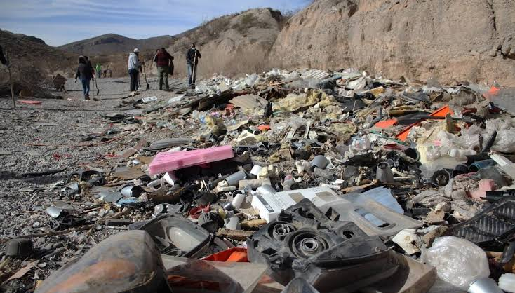
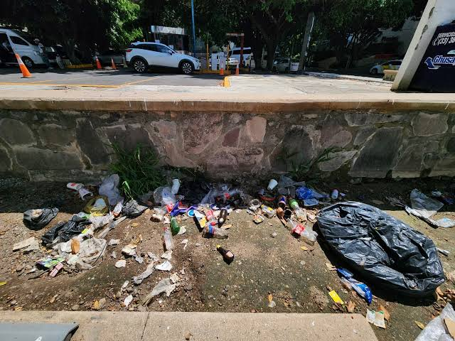
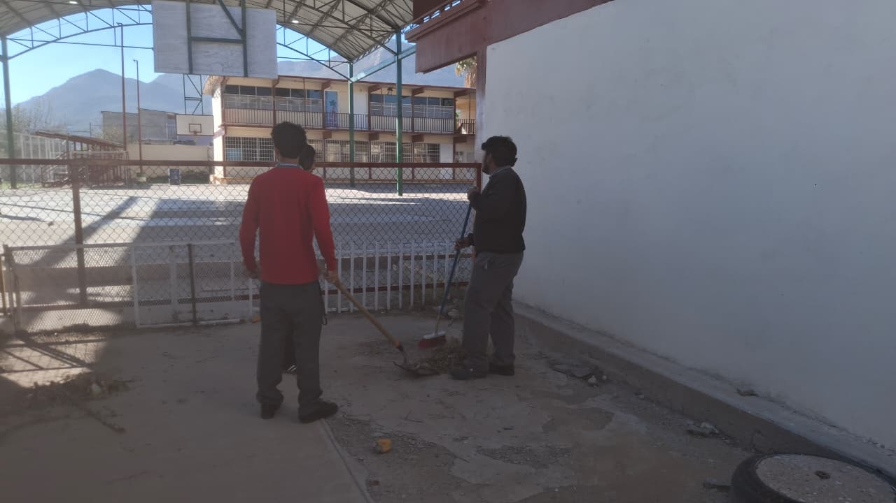

Volver a la página anterior Volver a la Portada
En Ciudad Juárez más de la mitad de la basura doméstica son residuos inorgánicos como plástico, cartón, latas, unicel y papel, seguidos por restos orgánicos de comida y jardinería. A esto se suman desechos voluminosos como llantas viejas, escombro, muebles dañados y aparatos electrónicos, además de residuos industriales de las plantas maquiladoras.

Principalmente en los diques de captación de agua, los arroyos pluviales, los lotes baldíos de varias colonias y en más de cien tiraderos clandestinos ubicados en las faldas de la Sierra de Juárez. También se juntan montículos de desechos en las esquinas de zonas habitacionales cuando se retrasan las rutas de recolección.

La mayoría de los hogares aún no separa los residuos y los entrega mezclados al camión recolector, lo que dificulta aprovechar los materiales reciclables. Además, la ciudad enfrenta retrasos frecuentes en las rutas de recolección por falta de camiones disponibles, la aparición constante de basureros clandestinos que tapan los diques provocando inundaciones cuando llueve, e incendios en recicladoras o en el relleno sanitario que contaminan el aire.

"Cuidar Ciudad Juárez empieza desde la banqueta de nuestra casa: separar hoy es evitar la contaminación de mañana."
Volver arriba Volver a la página anterior Volver a la Portada